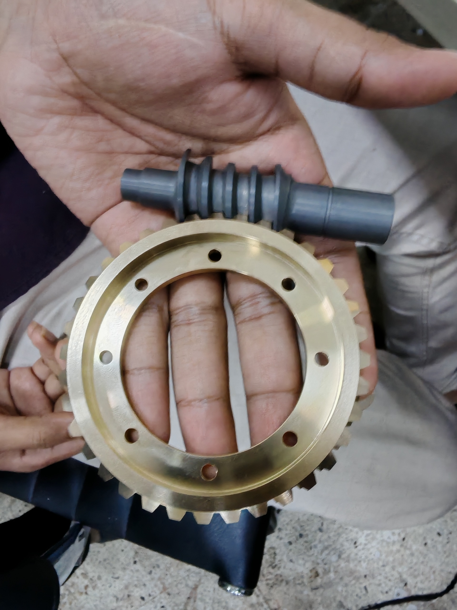
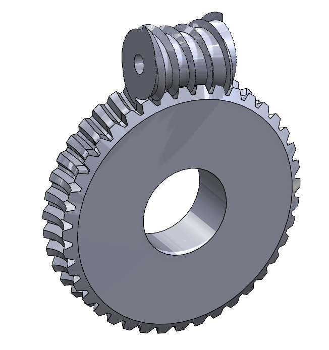
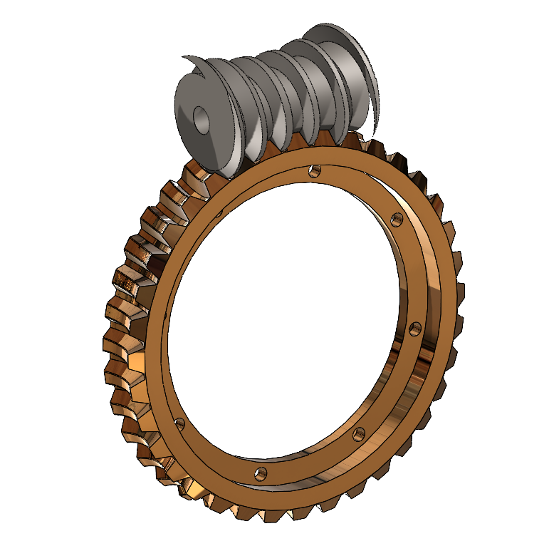
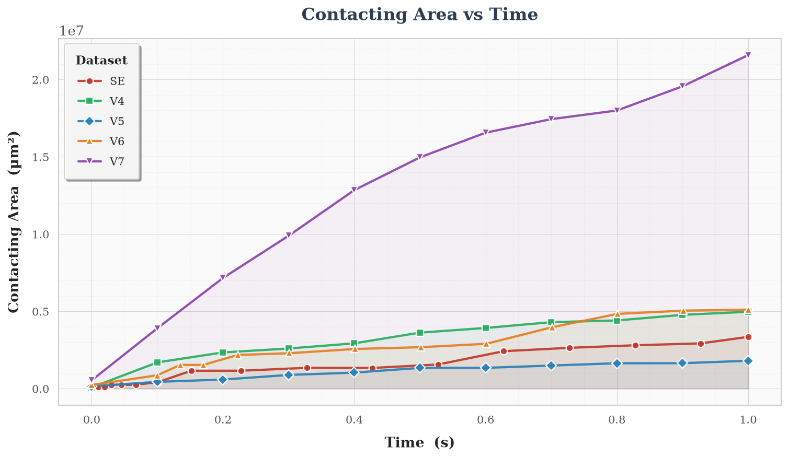
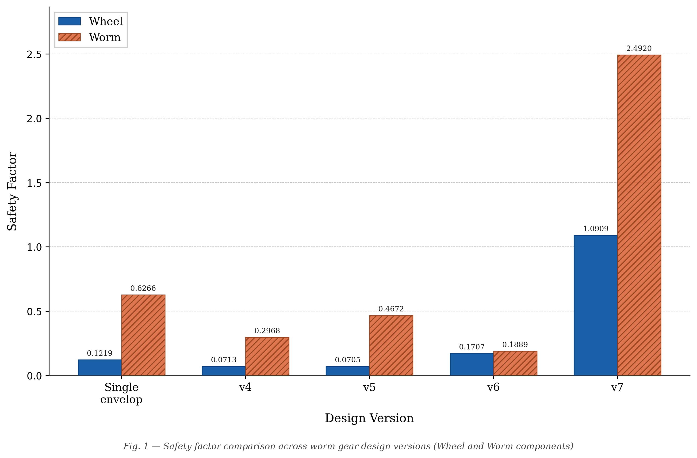
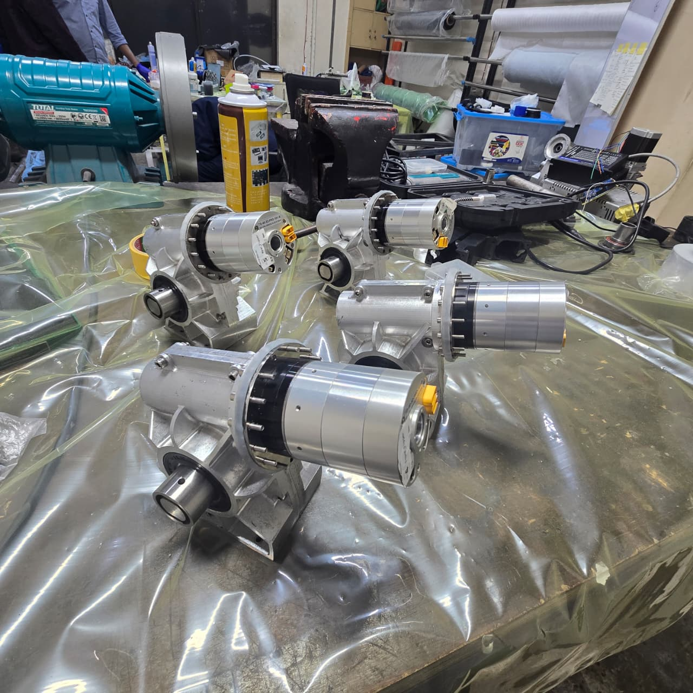
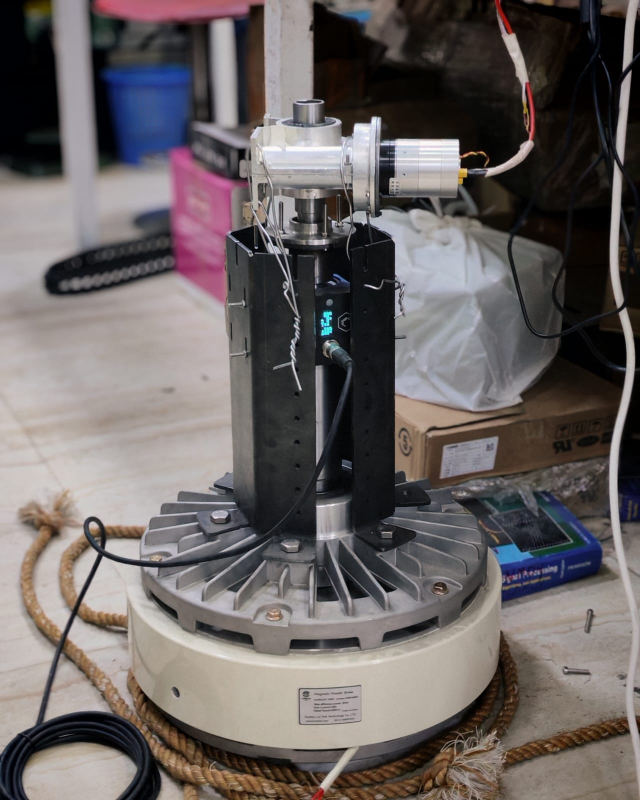
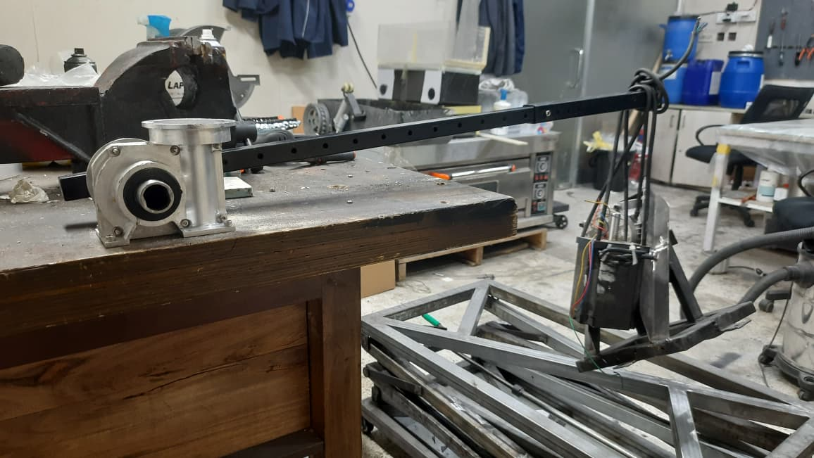

Off-the-shelf options
A survey across manufacturer catalogs showed the torque-versus-mass packaging problem. Higher-rated conventional units were too large or heavy for the light platform.
PROJECT 03 / ROBOTIC ACTUATION
A custom compact gearbox developed for the high-torque joints of a lightweight EOD ROV manipulator.
CASE STUDY / 03—05
01 / THE PROJECT
The light-platform EOD ROV needed an arm actuator that could handle demanding joint loads without making the robot too heavy or bulky. An initial conventional worm gearbox was rated for only 18 N·m of permissible output torque. The team's load calculations put the extended elbow at 181.7 N·m under a 20 kg load.
A market survey found the same trade-off repeatedly: available gearboxes with adequate torque exceeded the size, weight, or cost limits. The mechanical R&D team investigated a double-enveloping worm pair, then developed custom geometry through CAD, contact and stress simulations, fabrication, and bench testing.
02 / WHY A NEW GEARBOX
Permissible output torque of the selected NMRVS30 gearbox, at 20:1 ratio and approximately 1 kg mass.
Calculated elbow-joint torque with a 20 kg load at the extended position.
Gearbox mass limit in the new actuator brief, alongside a 175 N·m peak-torque target.
The presentation lists the 175 N·m design target and a separate 181.7 N·m elbow load calculation. It does not reconcile the difference; they are shown separately here.
A survey across manufacturer catalogs showed the torque-versus-mass packaging problem. Higher-rated conventional units were too large or heavy for the light platform.
A linear actuator conflicted with the elbow's range of motion. A shaft lock added discontinuous operation and integration complexity. Commercial double-enveloping drives were technically viable but costly.
The team pursued an hourglass-shaped, double-enveloping worm and wheel to increase tooth contact within a compact package.
03 / DESIGN ITERATIONS
Unlike a standard involute gear, the double-enveloping pair has a changing three-dimensional contact surface. The deck records difficulty matching internal simulation with published theory, a lack of a straightforward standardized geometry method, and demanding non-uniform machining paths.
Early concepts exposed interference, limited contact, or manufacturing problems. The presentation documents iterations 1–8, while its research-flow summary calls version 7 the fabricated final design. Version 8 appears as ongoing design research, not the built gearbox.


Set the ROV joint loads, mass ceiling, ingress-protection target, and service-life goal.
Review catalog gearboxes and alternative actuation approaches against the available envelope.
Revise worm and wheel geometry for contact, interference, and manufacturability.
Use mesh, contact-area, stress, and safety-factor studies before manufacturing and bench tests.
04 / SIMULATION EVIDENCE

The slide's comparative simulation shows version 7 with the largest plotted contact area. This is a model result, not a measured torque or endurance result.

Version 7 is highest in the chart: 1.0909 for the wheel and 2.4920 for the worm. The wheel's small margin above 1 calls for careful interpretation.
05 / FABRICATION & TESTING
The team manufactured the worm screw and wheel and assembled motor-driven gearboxes. The deck documents a magnetic-powder-brake dynamometer setup and a separate static lever test with a 1 m arm and an 18 kg suspended mass. That static load corresponds to about 177 N·m of applied moment under standard gravity. The slides do not supply a complete measured torque curve, a confirmed IP55 test, or a 1,000-hour endurance result.



A custom double-enveloping worm gear design progressed through comparative simulation to manufactured components, assembled actuators, and bench-test setups for the ROV arm. The remaining performance targets should be treated as design requirements until complete validation data is available.
06 / START A CONVERSATION
Open to projectsFrom a first sketch to a working prototype.
Let’s talk about what you’re building.